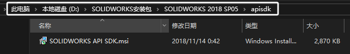

官方插件SDK介绍
SOLIDWORKS 提供一种官方的插件方案，你需要先安装SOLIDWORKS API SDK来获得“swcsharpaddin”插件模板：
说明：
1 | //为插件生成后注册到注册表的项，由系统自动生成 |
代码内容
插件的大致内容：

工具栏定义
ICommandManager Interface Members（工具栏管理器对象）
ICommandGroup Interface Members（工具栏）

创建工具栏
CreateCommandGroup2 Method (ICommandManager)
在命令管理器中创建新的命令组。
工具栏分栏
CommandTabs Method (ICommandManager)
获取指定文档类型的所有外接程序命令管理器选项卡。
添加命令
AddCommandItem2 Method (ICommandGroup)
将组合菜单项和工具栏项添加到命令组。
下拉框
CreateFlyoutGroup2 Method (ICommandManager)
在命令管理器和上下文相关菜单中创建新的浮出控件。
属性框定义
xxx
AddItemToThirdPartyPopupMenu2 Method (ISldWorks)
将菜单项添加到 SOLIDWORKS 附加模块中的弹出（快捷方式）菜单中。

Q&A
SolidWorksTools 引用
SOLIDWORKS API SDK在安装位置
这模板将此 DLL 添加到外接程序项目的引用列表中。这 DLL 必须与外接程序应用程序一起重新分发。
目前，此 DLL 包含 SOLIDWORKS 位图处理程序类、BitmapHandler、 它基于 SOLIDWORKS CommandManager。使用 Microsoft Visual Studio .NET Object Browser 或 Intellisense 查看其成员。
手动添加C#模板：
把swcsharpaddin.zip放到对应的C#模板目录下即可